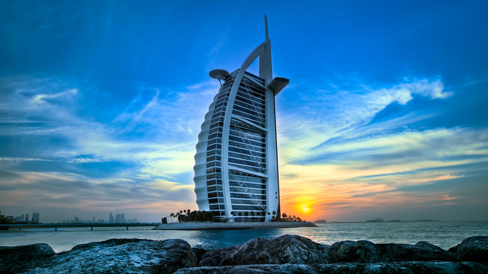
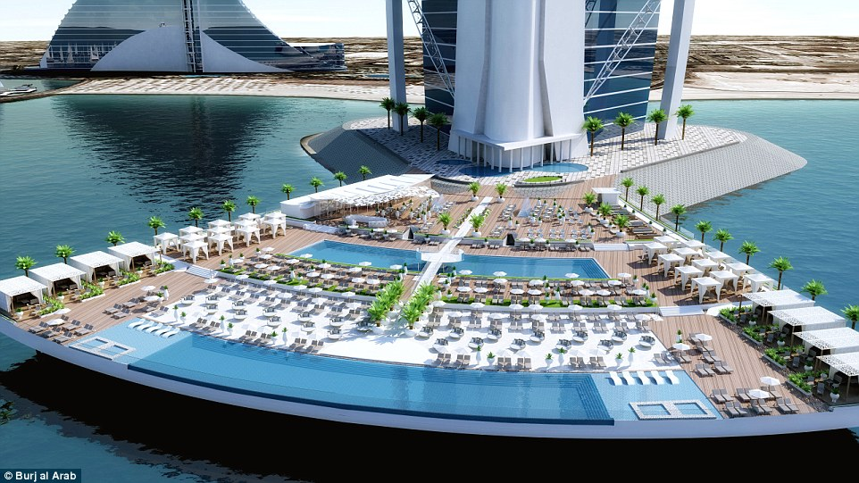
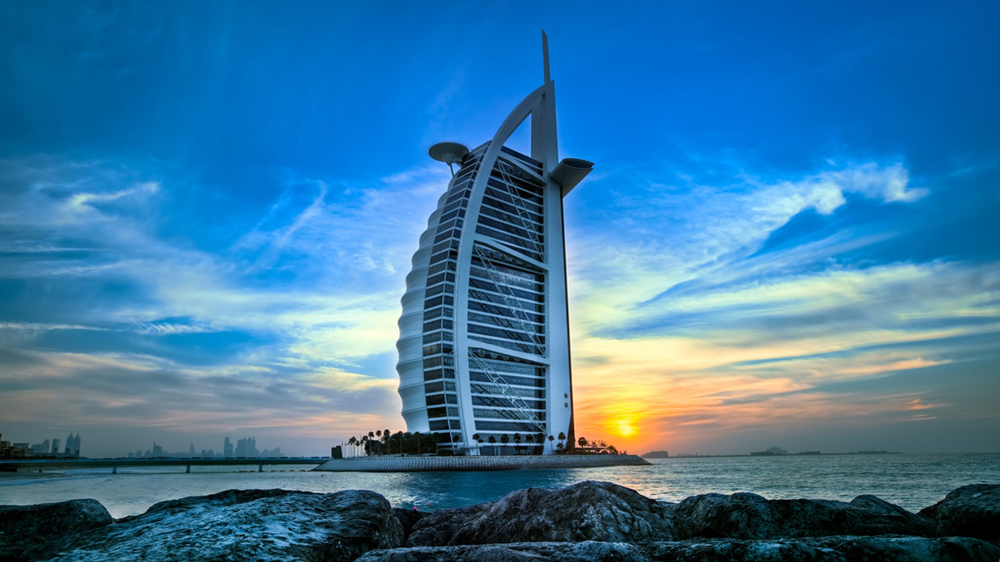
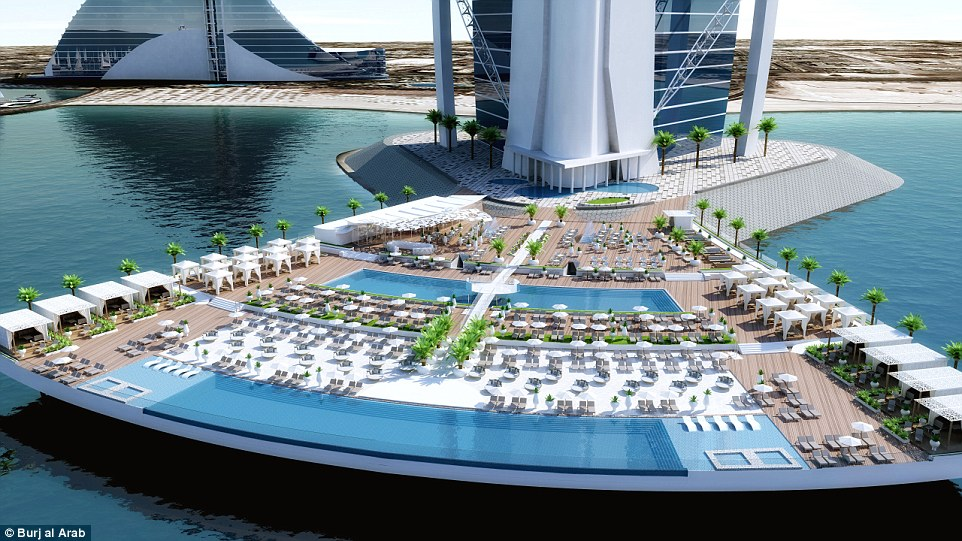
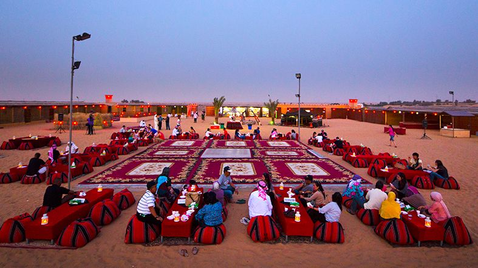

Lugares Para Visitar En Dubai
Burj Khalifa
El Burj Khalifa (Torre Califa) es el edificio más alto del mundo con una altura de 828 metros. En la construcción del edificio han participado más de 12.000 personas de 30 países. Anteriormente fue conocido como Burj Dubai (Torre de Dubái).
Para hacernos una idea de su altura lo mejor es compararlo con el rascacielos más famoso del mundo, el Empire State de Nueva York. Con 381 metros de altura (431 si incluimos su antena), el rascacielos neoyorquino es la mitad que el Burj Khalifa.
La construcción del Burj Khalifa comenzó el 21 de septiembre de 2004 y finalizó el 4 de enero de 2010, más de un año después de lo previsto. El rascacielos destaca por tener un gran número de plantas residenciales, algo insólito hasta el momento.

Junto al Burj Khalifa hay un gran lago artificial donde se encuentra instalada la Fuente de Dubái, una de las atracciones imprescindibles de la ciudad. Alrededor del lago encontraréis bares y restaurantes y, cómo no, el famoso centro comercial Dubai Mall.
actualmente el edificio más alto del mundo, representa la unión del arte, la ingeniería y el patrimonio histórico. Cuenta con miles de metros reservados para oficinas, 900 residencias privadas, las 160 maravillosas habitaciones del Armani Hotel y el mirador al aire libre At the Top, localizado en la planta 124. La adquisición más reciente es el mirador At The TopSKY, que rompe todos los récords al situarse en la planta 148.
El Jardin Milagro
Jardín Milagro (Dubai). Conocido también como El Dubai Miracle Garden. Es una obra maestra de la tecnología y el arte ideada en Dubai, es ya el mayor jardín del mundo de flores naturales donde se encuentran 45 millones de flores.
Está ubicado en el cuadrante noroeste de intercambio Arabian Ranches junto Shiekh Mohammad Bin Zayed Road en Dubai Proyecto de Desarrollo de Tierras.
. Es llamado Milagro, ya que está en medio del desierto en Dubái, una de las zonas más áridas del mundo. Se inauguró en el Día de San Valentín en 2013, es ya el mayor jardín del mundo se encuentran 45 millones de flores naturales, en un espacio de 72.000 metros cuadrados. Muchos aseguran que este lugar bien podría ser una réplica exacta del paraíso en la Tierra.
Posee más de 45 millones de flores, en deslumbrantes diseños de increíbles formas y estructuras, que captan la vista por las combinaciones de colores a través de 45 diferentes tipos y variedades de flores que se cambian cada año, lo que convierten el lugar en un destino distinto y extravagante para la recreación al aire libre.
Alégrese la vista y el ánimo con las florecientes pirámides, estrellas, iglús y corazones. Maravíllese con un muro de flores sin precedente, o pasee bajo un cielo de coloridas sombrillas. El parque, rebosante de exposiciones muy animadas, parece más bien una exposición de arte inmersiva que una atracción turística. Se marchará sabiendo que en verdad ha presenciado un auténtico milagro: un jardín gigante en medio del desierto.
Posee un sistema de riego subterráneo por goteo al que se le unen potentes fertilizantes que llegan a las raíces de las plantas. Por otra parte, en época veraniega cierra sus puertas para que las condiciones climáticas no afecten toda la flora.
Si quieres visitar este gran oasis de las flores, puedes hacerlo de octubre a finales de mayo, todos los días de 9 a 21 horas. La entrada cuesta 20 dírhams (aproximadamente, 5 euros) y los niños menores de tres años entran gratis. Y por último una advertencia, no trates de quedarte con un ramo de flores de recuerdo, el reglamento para los visitantes prohíbe explícitamente tocar y cortar.
Atlantis Hotel
El Hotel Atlantis es un resort que está situado en la isla Palma Jumeirah de Dubái, Emiratos Árabes Unidos. Fue inaugurado el 20 de noviembre de 2008. El diseño arquitectónico se basa principalmente en el hotel Atlantis Paradise Island de las Bahamas. El hotel fue financiado por el magnate del cobre Chileno Tomás Arellano Contardo
El hotel consta de dos torres unidas por un puente, y un total de aproximadamente 2.000 habitaciones. Posee dos estaciones del monorriel que conecta el conjunto del resort con la sección principal de Palm Jumeirah. El hotel Atlantis también incluye un parque acuático de 16 ha, un centro de conferencias, y 1.858 m² de espacio al por menor. El costo del conjunto del resort está estimado en 1.200 millones de dólares. Prácticamente es idéntico al Hotel Atlantis de las islas Bahamas del Mar Caribe.
Canchas de Tennis mas alta del mundo
No hay pista de tenis en el mundo que tenga mejor punto de vista (o caída) como el que en el Burj Al Arab hotel en Dubai. Situado a más de 650 pies (200 m) por encima del suelo, helipuerto del hotel hierba se convirtió en un pies cuadrados 4500 (415 metros cuadrados), pista de tenis para promover la espalda Abierto de Dubai en 2005. Antiguos rivales Andre Agassi y Roger Federer tuvo la oportunidad de jugar en la cancha e incluso dispararon algunas pelotas en el borde.
Mercado Viejo (gold souk)

Si quiere llevar a casa oro como recuerdo de su viaje a Dubai, el Gold Souk (o mercado del oro) lo deslumbrará con sus expositores de joyería donde el oro reluce apilado en los escaparates y puestos. La ventaja de esta ciudad, prácticamente libre de delincuencia, es que tendrá toda la libertad para ojear, probarse y echar un vistazo más de cerca a la mercancía. Y asegúrese de regatear para conseguir el mejor precio posible.
Mercado del oro de Dubai o bazar también se llama el viejo mercado del oro en Dubai, uno de los mercados más antiguos de Dubai y es probablemente el mercado más antiguo de oro en el emirato de Dubai. Situado en el corazón de Deira. Este es uno de los mejores lugares del mundo para comprar joyas de oro. En las tiendas locales, tiendas y pabellones exhibe una gran variedad de joyas - el trabajo de artistas y joyeros locales de otras partes del país. Debido a los bajos impuestos, el precio del oro aquí casi la más rentable del mundo. Si usted está invitado a una boda gitana, aquí usted está seguro de encontrar un gran regalo, pero un hombre con buen gusto sería difícil aquí.
Esqui en el desierto


El Ski Dubái tiene unas dimensiones apabullantes para llegar a albergar el máximo de aforo, 1.500 personas: 22.500 metros cuadrados de zona esquiable (el equivalente a 3 campos de fútbol) repartidos en 5 pistas de distinta dificultad que en total suman 80 metros de anchura. La altura también es mareante: mide 85 metros, lo mismo que un edificio de 25 plantas. Es tan grande que no se puede ver como sube la gente en telesilla hasta el final de la pista más larga. Esta pista mide 400 metros y ha sido la primera catalogada como “negra” en un recinto cerrado. El remonte hace un giro de 45 grados y se pierde de vista desde la zona baja.
Burj al Arab
 



Como Dubai es una ciudad tan ostentosa, tiene mucho sentido que sea casa del único Hotel de 7 estrellas en el mundo. Dentro del Burj al Arab, hay acuarios al lado de las escaleras eléctricas, y el restaurant que sirve mariscos se localiza bajo el mar. Si quieren disfrutar de los más finos cócteles, relájate y disfruta de uno dentro del skybar del hotel. Antes de ir al Burj al Arab, asegúrate de que has hecho una reservación en su bar o restaurante. El hotel es tan exclusivo que no se permite que la gente solo llegue a ver.
Safaris del Desierto

Si quieres tener una experiencia extremadamente emocionante, haz un safari en el desierto, que está disponible justo afuera de la ciudad. Cada safari consiste en tomar un vehículo de 4x4 y andar entre las dunas del desierto. A los que le gusta esta actividad tienen la opción de usar un guía, o ponerse al volante por si mismos.